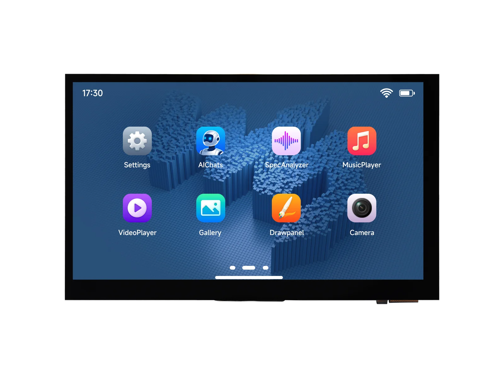

ESP32-P4-WIFI6-Touch-LCD-7B
Waveshare · Waveshare ESP32-P4 7" 1024×600 IPS touch board with RS-485, CAN, dual mics
ESP32-P4-WIFI6-Touch-LCD-7B is a 7.0" 1024x600 IPS Capacitive touch ESP32 display board by Waveshare based on the ESP32-P4 with 32MB flash, 32MB (in package) PSRAM.
Features, ports & interfaces
- Capacitive touch (GT911)
- 32 MB PSRAM (in package)
- 32 MB flash
- microSD (TF) card slot
- Wi-Fi 6 – as stated by the vendor
- Bluetooth 5 LE – as stated by the vendor
- USB-C
- RS-485
- CAN
- Speaker header
- Microphone: Dual microphones (echo cancellation)
- Camera: MIPI-CSI
- RTC battery holder
Specifications
| Parameter | Value | Source |
|---|---|---|
| Screen size | 7.0" | source |
| Resolution | 1024x600 | source |
| Panel | IPS | source |
| Shape | Rectangular | |
| Touch | Capacitive | source |
| Touch controller | GT911 | source |
| MCU / SoC | ESP32-P4 (RISC-V dual-core + LP core) | source |
| MCU family | ESP32-P4 | source |
| Flash | 32MB | source |
| PSRAM | 32MB (in package) | source |
| Wi-Fi | Wi-Fi 6 (per product name / page) | source |
| Bluetooth | BLE 5 | source |
| USB | USB Type-C, USB 2.0 OTG HS | source |
| Category | Waveshare ESP32 touch LCD | |
| Brightness | 350 cd/m² | source |
| Camera | MIPI-CSI | source |
| CAN | CAN | source |
| Microphone | Dual microphones (echo cancellation) | source |
| RS-485 | RS-485 | source |
| RTC | RTC battery holder | source |
| SD / TF | TF card slot | source |
| Speaker interface | Speaker header | source |
| Vendor | Waveshare |
Official links & documentation
Notes
- Wi-Fi 6 / BLE via an ESP32-C6 co-processor is implied by the product name (WIFI6); the co-processor module is not named on the page.